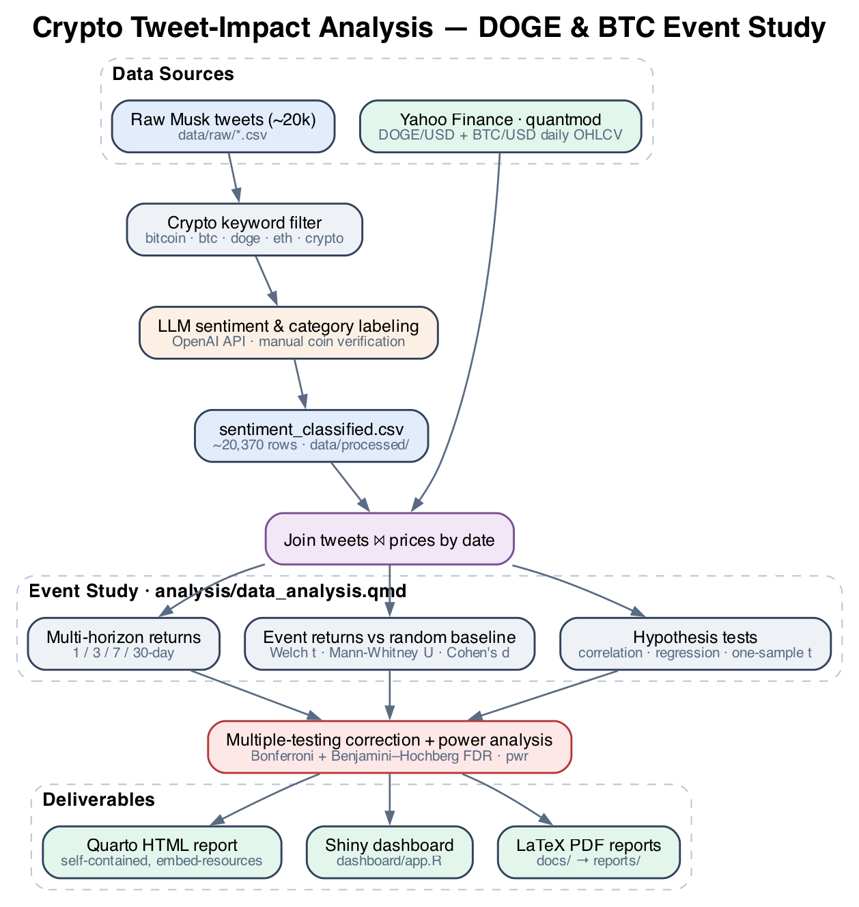
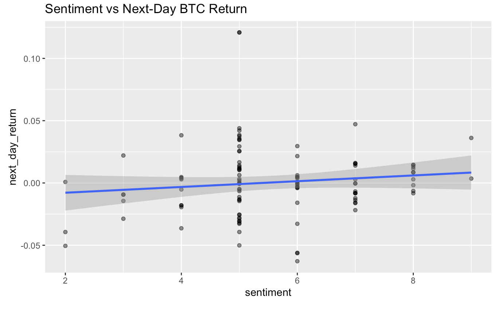
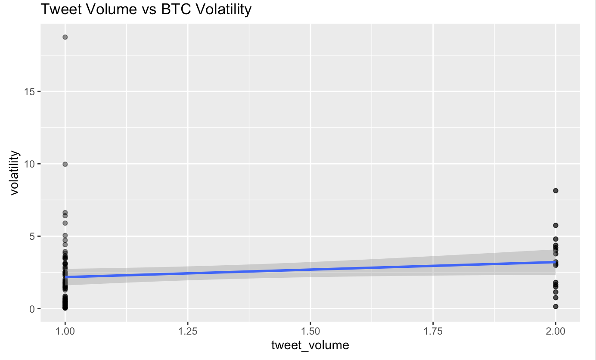
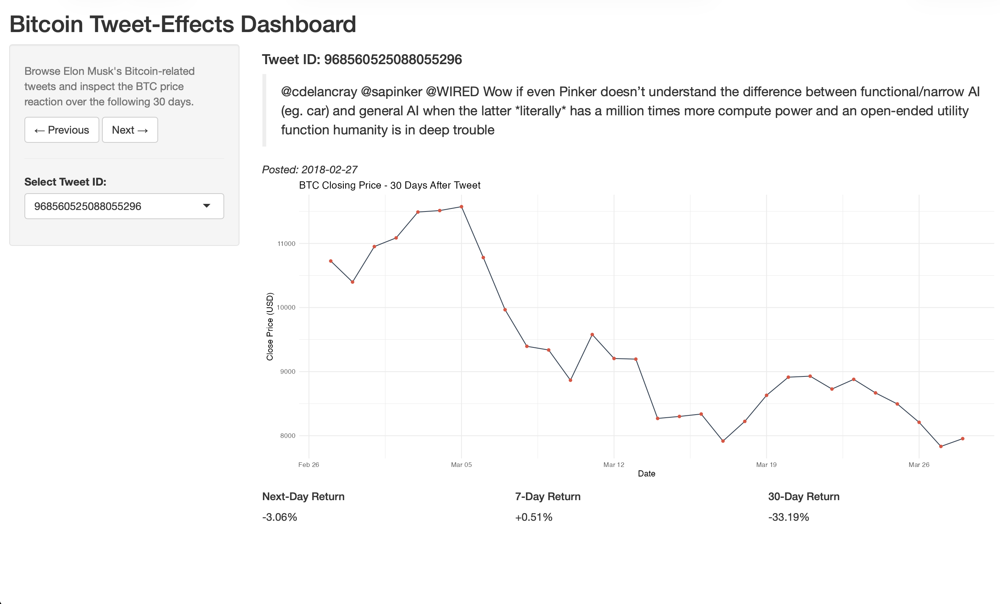
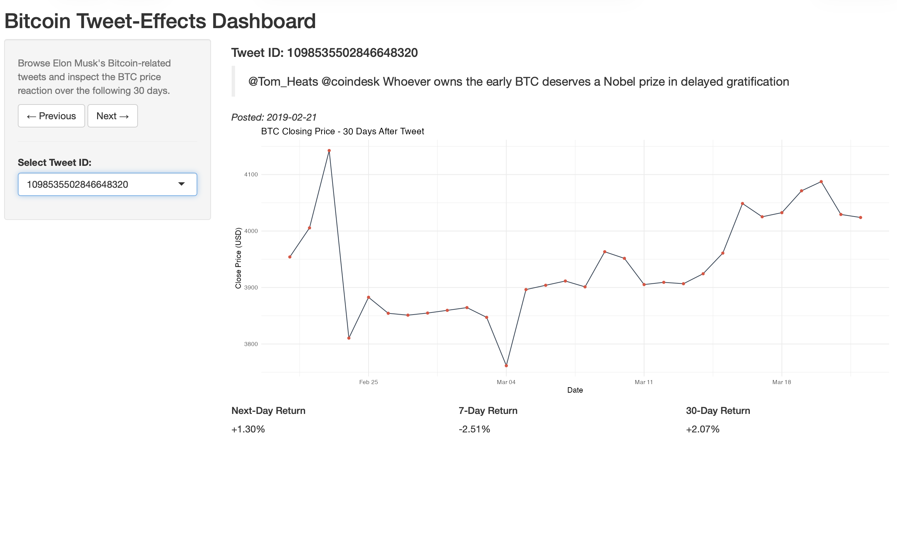

Overview
This is a reproducible, statistically rigorous study of a deceptively simple question: do Elon Musk's cryptocurrency tweets actually move the coin? I built an end-to-end R data-science pipeline that pairs roughly 20,000 LLM-classified Musk tweets with daily price histories for Dogecoin (DOGE/USD) and Bitcoin (BTC/USD), then runs a full event-study framework over them — multi-horizon returns, a seeded random baseline control, formal hypothesis tests, effect sizes, multiple-testing correction, and a power analysis. It was completed for CSP 571 (Data Preparation & Analysis) at the Illinois Institute of Technology.
The point of difference is the statistical hygiene. Most "tweet vs. price" analyses stop at a correlation and a scatter plot; this one reports Cohen's d effect sizes and confidence intervals alongside every p-value, corrects across 30+ category tests with both Bonferroni and Benjamini–Hochberg FDR, and quantifies what the small sample can and cannot detect. The headline result is itself the lesson: most signals that look significant disappear once you correct for multiple comparisons. The deliverables are a self-contained Quarto HTML report (~2,300 lines), an interactive Shiny dashboard, and compiled LaTeX PDF reports.
Problem and Goal
High-profile social-media activity is widely believed to move crypto markets, and Musk's tweets — especially about the meme-origin coin Dogecoin — are the canonical example. But "everyone knows it moves the price" is an empirical claim, not a proven one, and the popular evidence for it tends to be anecdotal: a chart with a tweet annotated next to a green candle. My goal was to test the claim properly — to treat each tweet as an event, measure the realized forward returns, compare them against a fair baseline, and apply the kind of correction and effect-size reporting that separates a real finding from noise. The honest answer mattered more than a clickbait one, so the analysis is candid throughout about statistical power and the difference between statistical and practical significance.
Key Findings
Five research questions drove the study; the results are deliberately unglamorous, and that is the contribution:
- Does sentiment predict next-day returns? No meaningful effect for either coin (BTC: r ≈ 0.12, p = 0.22; DOGE: r ≈ −0.12, p = 0.38).
- Do negative-sentiment DOGE tweets precede declines? The opposite — a contrarian signal: mean +4.27% 7-day return (p = 0.0097, 95% CI [1.1%, 7.4%]).
- Do meme vs. "relevant" tweets behave differently? Strongly: meme DOGE tweets averaged +6.9% over 7 days while contextually relevant ones averaged −6.2%.
- Does tweet volume drive volatility? A tentative positive trend, but not statistically significant (BTC p ≈ 0.15).
- What survives multiple-testing correction? Almost nothing — most raw-significant signals fail Bonferroni/FDR.
The most defensible takeaway is methodological: with only ~58 verified Doge tweets, statistical power is low, so rigorous correction is essential to avoid false discoveries — and the analysis says so explicitly rather than overselling the contrarian effect it found.
Analytical Architecture & Methodology
The pipeline runs end-to-end inside a single Quarto notebook (analysis/data_analysis.qmd), with two
data sources feeding a join keyed on date: ~20k LLM-classified tweets on one side, and daily OHLCV price series on
the other. Price data is fetched from Yahoo Finance via quantmod and auto-regenerates if the
committed CSVs are ever missing, so the report renders from a clean checkout without manual data wrangling.

The seven stages, in order:
- Ingest: load tweets + prices; auto-fetch DOGE/BTC daily series from Yahoo Finance if absent.
- Clean & filter: keep relevant, non-meme, valid-sentiment tweets per coin; de-duplicate; bucket sentiment into low/medium/high.
- Feature-engineer: compute percentage returns at 1-, 3-, 7-, and 30-day horizons.
- Event study: compute tweet-event returns and a seeded random baseline control group, so "before/after a tweet" is benchmarked against "a random day" rather than against nothing.
- Test: Welch t-tests and Mann-Whitney U vs. baseline; one-sample t-tests for negative-sentiment events; correlation and multiple regression of returns on sentiment and volume.
- Correct & quantify: Bonferroni + Benjamini–Hochberg FDR adjustment across all category tests; Cohen's d with confidence intervals; power and minimum-detectable-effect analysis with
pwr. - Report: narrative interpretation, summary tables (
kableExtra), and visualizations (ggplot2).
LLM-in-the-Loop Tweet Classification
Raw price history is easy; the hard input was turning ~20,000 free-text Musk posts into structured, analysis-ready
signal. The labeling pipeline produces sentiment_classified.csv (~20,370 rows) through a multi-step
process: a crypto keyword filter (bitcoin, btc, ethereum,
doge, crypto, …) narrows the scrape, then the OpenAI API scores each tweet for
sentiment (0–10) and classifies it on two further axes: contextually relevant vs.
joke/meme, and a topic category (Bitcoin, Doge Coin, Alt coins, Ethereum/smart contracts, general crypto,
exchanges/trading, and others).
Critically, the two primary categories — Bitcoin and Doge Coin — were
manually verified by hand rather than trusted blindly from the model output. That manual-verification
step is what makes the per-coin sentiment interpretation defensible, and it is exactly why the verified DOGE sample
is small (~58 tweets): the analysis treats label quality as worth more than label quantity. The labeling is run as an
offline pipeline and its outputs are committed to data/processed/, so the statistical analysis is fully
reproducible without re-spending API calls.
Statistical Rigor
This is the core of the project and the part most directly aimed at a data-science audience. Rather than reporting a single test, the study layers several methods so each finding has to survive multiple, complementary checks:
- Event-study design with a control group: tweet-event returns are compared against a seeded random baseline sampled from the same price series, so the comparison is "tweet day vs. typical day," not "tweet day vs. zero."
- Parametric + non-parametric tests: Welch's t-test (unequal variances) is paired with the Mann-Whitney U rank test, so conclusions don't hinge on a normality assumption the return distributions may not satisfy.
- Effect sizes, not just p-values: Cohen's d with confidence intervals accompanies every comparison, with an explicit discussion of statistical vs. practical significance.
- Multiple-testing correction: both Bonferroni (family-wise error) and Benjamini–Hochberg FDR are applied across 30+ category tests — the single most important guard against false discovery in this design.
- Power analysis: the
pwrpackage quantifies what the ~58-tweet sample can detect, reporting minimum detectable effects so the reader knows when a null result means "no effect" vs. "not enough data."

Tweet-Volume and Volatility
Beyond directional return, the Bitcoin analysis tests whether the volume of Musk's crypto tweets is associated with subsequent price volatility — a separate hypothesis from "does sentiment predict direction." The relationship shows a tentative positive trend but does not reach statistical significance (p ≈ 0.15), and the report presents it as such rather than rounding it up to a finding. This is representative of the project's discipline: a suggestive-but-not-significant result is reported as suggestive-but-not-significant.

Interactive Shiny Dashboard
To make the event study explorable rather than static, I built a self-contained Shiny dashboard
(dashboard/app.R) that lets you step through individual Bitcoin tweets and inspect the BTC price
reaction. For each tweet it shows the tweet text, the 30-day forward closing-price path, and the
realized 1-/7-/30-day returns. The app joins the categorized-tweet dataset to the price series in-process, and
degrades gracefully when the large, git-ignored raw tweet-text file is absent — it simply hides the
tweet text instead of crashing, so the dashboard runs from a clean clone.


Engineering & Reproducibility
The repository is structured as a portfolio-grade, reproducible project rather than a loose
notebook dump. A Makefile exposes the full lifecycle — make deps, make report,
make dashboard, make reports-pdf, make clean — and a one-shot
scripts/install_dependencies.R installs every package the analysis and dashboard need. The data
directory is split into processed/ (small, committed, analysis-ready) and raw/ (large
source scrapes, git-ignored), with a documented data dictionary and provenance trail for every column.
- Deterministic results: random seeds are fixed so the baseline control group — and therefore every reported figure — is reproducible across runs.
- Self-contained output: the Quarto report renders with
embed-resources: trueto a single HTML file with all assets inlined, so it can be shared as one artifact. - Graceful data fallbacks: price CSVs auto-download from Yahoo Finance if missing; the dashboard runs without the git-ignored raw text file.
- Path-robust code: the dashboard resolves its data directory whether launched from the repo root or from inside
dashboard/. - Separation of sources and deliverables: editable LaTeX sources live in
docs/, while the compiled PDF proposal and phase-2 report live inreports/.
Engineering Challenges Solved
- ~20k free-text tweets into structured signal: built a keyword-filter → LLM-sentiment → LLM-classification pipeline, then hand-verified the two coins that the conclusions actually depend on — trading sample size for label trustworthiness.
- Multiple-comparison false discovery: testing 30+ tweet categories invites spurious "significant" hits. Applied Bonferroni and FDR correction so the reported conclusions reflect what survives, not what looked good once.
- Low statistical power, honestly handled: with ~58 verified DOGE tweets, a null result is ambiguous. Added a
pwrpower analysis with minimum-detectable-effect estimates so the reader can tell "no effect" from "not enough data." - Fair baseline for an event study: "returns after a tweet" means nothing without a control. Constructed a seeded random baseline from the same price series so every event return is measured against a typical-day distribution.
- Reproducibility from a cold checkout: committed the processed datasets, fixed seeds, and made price data auto-fetch — so the report and dashboard run without re-spending OpenAI calls or manual data steps.
Tech Stack
- Language: R 4.x.
- Data wrangling:
tidyverse(dplyr, tidyr, readr, stringr, purrr),lubridate. - Modeling & statistics:
broom,tseries, basestats(Welch t-tests, Mann-Whitney U, one-sample t, lm, cor),pwrfor power analysis. - Market data:
quantmod(Yahoo Finance ingestion). - Reporting: Quarto,
knitr,kableExtra; LaTeX for compiled PDF reports. - Interactive app: Shiny,
ggplot2. - Sentiment & classification: OpenAI API (offline labeling pipeline; outputs committed to
data/processed/). - Tooling: GNU Make, Git, RStudio project.
The pipeline is intentionally modular: each stage emits an inspectable intermediate artifact (classified tweets, per-horizon returns, baseline draws, test tables), so any single step can be re-run, audited, or swapped without rebuilding the whole study.
Limitations & Future Directions
The report is candid about its constraints — and treats that candor as part of the contribution rather than a disclaimer to bury:
- Small verified sample (~58 Doge tweets) limits statistical power — quantified, not hand-waved, via the power analysis.
- Observational design yields associations, not causation; many market confounders are unmodeled.
- Temporal dependence in returns is not fully captured (no formal time-series model).
- Random baseline does not perfectly match the market conditions present at tweet times.
Each limitation is paired with a concrete next step in the report: larger and refreshed samples, condition-matched baselines, explicit time-series methods, and causal-inference techniques.
Key Learnings
- Correction changes the story. The single biggest lesson was watching a fistful of "significant" raw results evaporate under Bonferroni/FDR — a visceral demonstration of why multiple-testing discipline is non-negotiable.
- Effect size and power belong next to every p-value. Reporting Cohen's d, confidence intervals, and minimum detectable effects turned ambiguous nulls into interpretable statements.
- Label quality beats label quantity. Hand-verifying the two coins the conclusions depend on was worth more than a larger but noisier auto-labeled set.
- Reproducibility is an engineering feature. Fixed seeds, committed processed data, auto-fetching prices, and a Make-driven lifecycle are what let this run end-to-end from a clean clone.
Conclusion
This project is the clearest demonstration of how I approach data science: take a popular, intuitive claim, design an honest test for it, and let the statistics — not the narrative — decide the verdict. It pairs a real LLM-in-the-loop data pipeline with a disciplined inferential framework (event study, non-parametric and parametric testing, effect sizes, multiple-testing correction, and power analysis), packages the result as a reproducible Quarto report and an interactive Shiny dashboard, and is candid about exactly what its sample can and cannot support. The conclusion that "most apparent tweet effects don't survive correction" is less exciting than a viral headline — and far more defensible, which is the entire point.